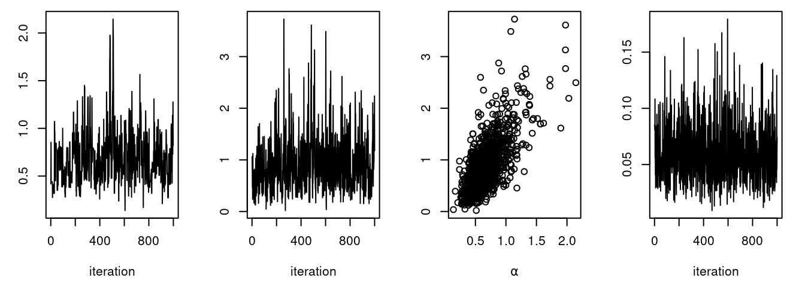
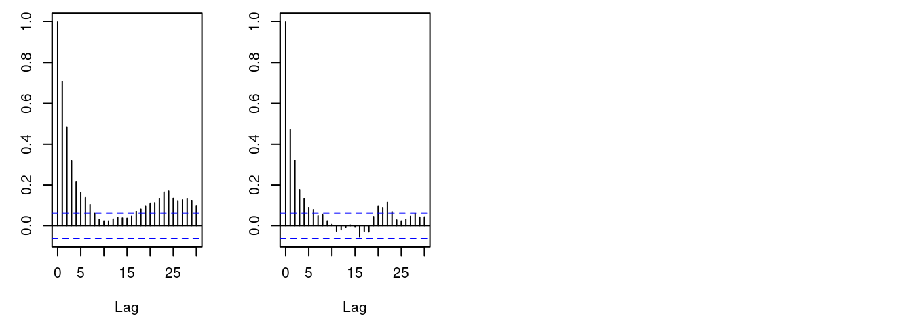

Chapter 2 Lightning introduction
2.1 A brief example
Here we’ll give a simple example of building a model and running some algorithms on the model, as well as creating our own user-specified algorithm. The goal is to give you a sense for what one can do in the system. Later sections will provide more detail.
We’ll use the pump model example from BUGS3. We could load the model from the standard BUGS example file formats (Section 6.1.2), but instead we’ll show how to enter it directly in R.
In this ‘lightning introduction’ we will:
- Create the model for the pump example.
- Compile the model.
- Create a basic MCMC configuration for the pump model.
- Compile and run the MCMC
- Customize the MCMC configuration and compile and run that.
- Create, compile and run a Monte Carlo Expectation Maximization (MCEM) algorithm, which illustrates some of the flexibility NIMBLE provides to combine R and NIMBLE.
- Write a short
nimbleFunctionto generate simulations from designated nodes of any model.
2.2 Creating a model
First we define the model code, its constants, data, and initial values for MCMC.
pumpCode <- nimbleCode({
for (i in 1:N){
theta[i] ~ dgamma(alpha,beta)
lambda[i] <- theta[i]*t[i]
x[i] ~ dpois(lambda[i])
}
alpha ~ dexp(1.0)
beta ~ dgamma(0.1,1.0)
})
pumpConsts <- list(N = 10,
t = c(94.3, 15.7, 62.9, 126, 5.24,
31.4, 1.05, 1.05, 2.1, 10.5))
pumpData <- list(x = c(5, 1, 5, 14, 3, 19, 1, 1, 4, 22))
pumpInits <- list(alpha = 1, beta = 1,
theta = rep(0.1, pumpConsts$N))Here x[i] is the number of failures recorded during a time
duration of length t[i] for the i\(^{th}\) pump.
theta[i] is a failure rate, and the goal is estimate parameters
alpha and beta. Now let’s create the model and look at some of its nodes.
pump <- nimbleModel(code = pumpCode, name = "pump", constants = pumpConsts,
data = pumpData, inits = pumpInits)
pump$getNodeNames()## [1] "alpha" "beta" "lifted_d1_over_beta"
## [4] "theta[1]" "theta[2]" "theta[3]"
## [7] "theta[4]" "theta[5]" "theta[6]"
## [10] "theta[7]" "theta[8]" "theta[9]"
## [13] "theta[10]" "lambda[1]" "lambda[2]"
## [16] "lambda[3]" "lambda[4]" "lambda[5]"
## [19] "lambda[6]" "lambda[7]" "lambda[8]"
## [22] "lambda[9]" "lambda[10]" "x[1]"
## [25] "x[2]" "x[3]" "x[4]"
## [28] "x[5]" "x[6]" "x[7]"
## [31] "x[8]" "x[9]" "x[10]"pump$x## [1] 5 1 5 14 3 19 1 1 4 22pump$logProb_x## [1] -2.998011 -1.118924 -1.882686 -2.319466 -4.254550 -20.739651
## [7] -2.358795 -2.358795 -9.630645 -48.447798pump$alpha## [1] 1pump$theta## [1] 0.1 0.1 0.1 0.1 0.1 0.1 0.1 0.1 0.1 0.1pump$lambda## [1] 9.430 1.570 6.290 12.600 0.524 3.140 0.105 0.105 0.210 1.050Notice that in the list of nodes, NIMBLE has introduced a new node,
lifted_d1_over_beta. We call this a ‘lifted’ node. Like R,
NIMBLE allows alternative parameterizations, such as the scale or rate
parameterization of the gamma distribution. Choice of parameterization
can generate a lifted node, as can using a link function or a
distribution argument that is an expression. It’s helpful to know why
they exist, but you shouldn’t need to worry about them.
Thanks to the plotting capabilities of the igraph package that
NIMBLE uses to represent the directed acyclic graph, we can plot the
model (Figure 2.1).
pump$plotGraph()Figure 2.1: Directed Acyclic Graph plot of the pump model, thanks to the igraph package
You are in control of the model. By default, nimbleModel does
its best to initialize a model, but let’s say you want to
re-initialize theta. To simulate from the prior for theta (overwriting the
initial values previously in the model) we first need to be sure the
parent nodes of all theta[i] nodes are fully initialized, including any non-stochastic nodes such
as lifted nodes. We then use the simulate function to simulate
from the distribution for theta. Finally we use the
calculate function to
calculate the dependencies of theta, namely lambda and the
log probabilities of x to ensure all parts of the
model are up to date. First we show how
to use the model’s getDependencies method to query information
about its graph.
# Show all dependencies of alpha and beta terminating in stochastic nodes
pump$getDependencies(c("alpha", "beta"))## [1] "alpha" "beta" "lifted_d1_over_beta"
## [4] "theta[1]" "theta[2]" "theta[3]"
## [7] "theta[4]" "theta[5]" "theta[6]"
## [10] "theta[7]" "theta[8]" "theta[9]"
## [13] "theta[10]"# Now show only the deterministic dependencies
pump$getDependencies(c("alpha", "beta"), determOnly = TRUE)## [1] "lifted_d1_over_beta"# Check that the lifted node was initialized.
pump[["lifted_d1_over_beta"]] # It was.## [1] 1# Now let's simulate new theta values
set.seed(1) # This makes the simulations here reproducible
pump$simulate("theta")
pump$theta # the new theta values## [1] 0.15514136 1.88240160 1.80451250 0.83617765 1.22254365 1.15835525
## [7] 0.99001994 0.30737332 0.09461909 0.15720154# lambda and logProb_x haven't been re-calculated yet
pump$lambda # these are the same values as above## [1] 9.430 1.570 6.290 12.600 0.524 3.140 0.105 0.105 0.210 1.050pump$logProb_x## [1] -2.998011 -1.118924 -1.882686 -2.319466 -4.254550 -20.739651
## [7] -2.358795 -2.358795 -9.630645 -48.447798pump$getLogProb("x") # The sum of logProb_x## [1] -96.10932pump$calculate(pump$getDependencies(c("theta")))## [1] -262.204pump$lambda # Now they have.## [1] 14.6298299 29.5537051 113.5038360 105.3583839 6.4061287 36.3723548
## [7] 1.0395209 0.3227420 0.1987001 1.6506161pump$logProb_x## [1] -6.002009 -26.167496 -94.632145 -65.346457 -2.626123 -7.429868
## [7] -1.000761 -1.453644 -9.840589 -39.096527Notice that the first getDependencies call returned dependencies
from alpha and beta down to the next stochastic nodes in the
model. The second call requested only deterministic dependencies.
The call to pump$simulate("theta")
expands "theta" to include all nodes in theta. After
simulating into theta, we can see that lambda and the log
probabilities of x still reflect the old values of theta, so
we calculate them and then see that they have been updated.
2.3 Compiling the model
Next we compile the model, which means generating C++ code, compiling that code, and loading it back into R with an object that can be used just like the uncompiled model. The values in the compiled model will be initialized from those of the original model in R, but the original and compiled models are distinct objects so any subsequent changes in one will not be reflected in the other.
Cpump <- compileNimble(pump)
Cpump$theta## [1] 0.15514136 1.88240160 1.80451250 0.83617765 1.22254365 1.15835525
## [7] 0.99001994 0.30737332 0.09461909 0.15720154Note that the compiled model is used when running any NIMBLE algorithms via C++, so the model needs to be compiled before (or at the same time as) any compilation of algorithms, such as the compilation of the MCMC done in the next section.
2.4 One-line invocation of MCMC
The most direct approach to invoking NIMBLE’s MCMC engine is using the
nimbleMCMC function. This function would generally take the code,
data, constants, and initial values as input, but it can also accept the (compiled or uncompiled)
model object as an argument. It provides a variety of options for executing and
controlling multiple chains of NIMBLE’s default MCMC algorithm, and
returning posterior samples, posterior summary statistics,
and/or WAIC values.
For example, to execute two MCMC chains of 10,000 samples each, and return samples, summary statistics, and WAIC values:
mcmc.out <- nimbleMCMC(code = pumpCode, constants = pumpConsts,
data = pumpData, inits = pumpInits,
nchains = 2, niter = 10000,
summary = TRUE, WAIC = TRUE,
monitors = c('alpha','beta','theta'))## [Warning] There are 7 individual pWAIC values that are greater than 0.4. This may indicate that the WAIC estimate is unstable (Vehtari et al., 2017), at least in cases without grouping of data nodes or multivariate data nodes.names(mcmc.out)## [1] "samples" "summary" "WAIC"mcmc.out$summary## $chain1
## Mean Median St.Dev. 95%CI_low 95%CI_upp
## alpha 0.69804352 0.65835063 0.27037676 0.287898244 1.3140461
## beta 0.92862598 0.82156847 0.54969128 0.183699137 2.2872696
## theta[1] 0.06019274 0.05676327 0.02544956 0.021069950 0.1199230
## theta[2] 0.10157737 0.08203988 0.07905076 0.008066869 0.3034085
## theta[3] 0.08874755 0.08396502 0.03760562 0.031186960 0.1769982
## theta[4] 0.11567784 0.11301465 0.03012598 0.064170937 0.1824525
## theta[5] 0.60382223 0.54935089 0.31219612 0.159731108 1.3640771
## theta[6] 0.61204831 0.60085518 0.13803302 0.372712375 0.9135269
## theta[7] 0.90263434 0.70803389 0.73960182 0.074122175 2.7598261
## theta[8] 0.89021051 0.70774794 0.72668155 0.072571029 2.8189252
## theta[9] 1.57678136 1.44390008 0.76825189 0.455195149 3.4297368
## theta[10] 1.98954127 1.96171250 0.42409802 1.241383787 2.9012192
##
## $chain2
## Mean Median St.Dev. 95%CI_low 95%CI_upp
## alpha 0.69101961 0.65803654 0.26548378 0.277195564 1.2858148
## beta 0.91627273 0.81434426 0.53750825 0.185772263 2.2702428
## theta[1] 0.05937364 0.05611283 0.02461866 0.020956151 0.1161870
## theta[2] 0.10017726 0.08116259 0.07855024 0.008266343 0.3010355
## theta[3] 0.08908126 0.08390782 0.03704170 0.031330829 0.1736876
## theta[4] 0.11592652 0.11356920 0.03064645 0.063595333 0.1829574
## theta[5] 0.59755632 0.54329373 0.31871551 0.149286703 1.3748728
## theta[6] 0.61080189 0.59946693 0.13804343 0.371373877 0.9097319
## theta[7] 0.89902759 0.70901502 0.72930369 0.076243503 2.7441445
## theta[8] 0.89954594 0.70727079 0.73345905 0.071250926 2.8054633
## theta[9] 1.57530029 1.45005738 0.75242164 0.469959364 3.3502795
## theta[10] 1.98911473 1.96227061 0.42298189 1.246910723 2.9102326
##
## $all.chains
## Mean Median St.Dev. 95%CI_low 95%CI_upp
## alpha 0.69453156 0.65803654 0.26795776 0.28329854 1.2999319
## beta 0.92244935 0.81828160 0.54365539 0.18549077 2.2785444
## theta[1] 0.05978319 0.05646474 0.02504028 0.02102807 0.1183433
## theta[2] 0.10087731 0.08162361 0.07880204 0.00811108 0.3017967
## theta[3] 0.08891440 0.08394667 0.03732417 0.03123228 0.1749967
## theta[4] 0.11580218 0.11326039 0.03038683 0.06385253 0.1827382
## theta[5] 0.60068928 0.54668011 0.31548032 0.15363752 1.3686801
## theta[6] 0.61142510 0.60015416 0.13803618 0.37203765 0.9122467
## theta[7] 0.90083096 0.70852800 0.73445465 0.07550465 2.7534885
## theta[8] 0.89487822 0.70761105 0.73007484 0.07211191 2.8067373
## theta[9] 1.57604083 1.44719278 0.76035931 0.46374515 3.3866706
## theta[10] 1.98932800 1.96195345 0.42352979 1.24334249 2.9068229mcmc.out$WAIC ## nimbleList object of type waicNimbleList
## Field "WAIC":
## [1] 48.69896
## Field "lppd":
## [1] -19.99653
## Field "pWAIC":
## [1] 4.352945See Section 7.1 or help(nimbleMCMC) for more
details about using nimbleMCMC.
Note that the WAIC value varies depending on what quantities are treated
as parameters. See Section 7.8 or help(waic) for more details.
2.5 Creating, compiling and running a basic MCMC configuration
At this point we have initial values for all of the nodes in the model,
and we have both the original and compiled versions of the model. As a first algorithm
to try on our model, let’s use NIMBLE’s default MCMC. Note that conjugate relationships are detected for all nodes except for
alpha, on which the default sampler is a random walk Metropolis sampler.
pumpConf <- configureMCMC(pump, print = TRUE)## ===== Monitors =====
## thin = 1: alpha, beta
## ===== Samplers =====
## RW sampler (1)
## - alpha
## conjugate sampler (11)
## - beta
## - theta[] (10 elements)pumpConf$addMonitors(c("alpha", "beta", "theta"))## thin = 1: alpha, beta, thetapumpMCMC <- buildMCMC(pumpConf)
CpumpMCMC <- compileNimble(pumpMCMC, project = pump)
niter <- 1000
set.seed(1)
samples <- runMCMC(CpumpMCMC, niter = niter)
par(mfrow = c(1, 4), mai = c(.6, .4, .1, .2))
plot(samples[ , "alpha"], type = "l", xlab = "iteration",
ylab = expression(alpha))
plot(samples[ , "beta"], type = "l", xlab = "iteration",
ylab = expression(beta))
plot(samples[ , "alpha"], samples[ , "beta"], xlab = expression(alpha),
ylab = expression(beta))
plot(samples[ , "theta[1]"], type = "l", xlab = "iteration",
ylab = expression(theta[1]))acf(samples[, "alpha"]) # plot autocorrelation of alpha sample
acf(samples[, "beta"]) # plot autocorrelation of beta sampleNotice the posterior correlation between alpha and beta.
A measure of the mixing for each is the
autocorrelation for each parameter, shown by the acf plots.
2.6 Customizing the MCMC
Let’s add an adaptive
block sampler on alpha and beta jointly and see if that
improves the mixing.
pumpConf$addSampler(target = c("alpha", "beta"), type = "RW_block",
control = list(adaptInterval = 100))
pumpMCMC2 <- buildMCMC(pumpConf)
# need to reset the nimbleFunctions in order to add the new MCMC
CpumpNewMCMC <- compileNimble(pumpMCMC2, project = pump,
resetFunctions = TRUE)
set.seed(1)
CpumpNewMCMC$run(niter)
samplesNew <- as.matrix(CpumpNewMCMC$mvSamples)
par(mfrow = c(1, 4), mai = c(.6, .4, .1, .2))
plot(samplesNew[ , "alpha"], type = "l", xlab = "iteration",
ylab = expression(alpha))
plot(samplesNew[ , "beta"], type = "l", xlab = "iteration",
ylab = expression(beta))
plot(samplesNew[ , "alpha"], samplesNew[ , "beta"], xlab = expression(alpha),
ylab = expression(beta))
plot(samplesNew[ , "theta[1]"], type = "l", xlab = "iteration",
ylab = expression(theta[1]))
acf(samplesNew[, "alpha"]) # plot autocorrelation of alpha sample
acf(samplesNew[, "beta"]) # plot autocorrelation of beta sample
We can see that the block sampler has decreased the
autocorrelation for both alpha and beta. Of course these
are just short runs, and what we are really interested in is the
effective sample size of the MCMC per computation time, but that’s not
the point of this example.
Once you learn the MCMC system, you can write your own samplers and include them. The entire system is written in nimbleFunctions.
2.7 Running MCEM
NIMBLE is a system for working with algorithms, not just an MCMC engine. So let’s try maximizing the marginal likelihood for alpha and beta using Monte Carlo Expectation Maximization4.
pump2 <- pump$newModel()
box = list( list(c("alpha","beta"), c(0, Inf)))
pumpMCEM <- buildMCEM(model = pump2, latentNodes = "theta[1:10]",
boxConstraints = box)
pumpMLE <- pumpMCEM$run()## Iteration Number: 1.
## Current number of MCMC iterations: 1000.
## Parameter Estimates:
## alpha beta
## 0.8160625 1.1230921
## Convergence Criterion: 1.001.
## Iteration Number: 2.
## Current number of MCMC iterations: 1000.
## Parameter Estimates:
## alpha beta
## 0.8045037 1.1993128
## Convergence Criterion: 0.0223464.
## Iteration Number: 3.
## Current number of MCMC iterations: 1250.
## Parameter Estimates:
## alpha beta
## 0.8203178 1.2497067
## Convergence Criterion: 0.004913688.
## Iteration Number: 4.
## Current number of MCMC iterations: 3032.
## Parameter Estimates:
## alpha beta
## 0.8226618 1.2602452
## Convergence Criterion: 0.0004201045.pumpMLE## alpha beta
## 0.8226618 1.2602452Both estimates are within 0.01 of the values reported by George, Makov, and Smith (1993)5. Some discrepancy is to be expected since it is a Monte Carlo algorithm.
2.8 Creating your own functions
Now let’s see an example of writing our own algorithm and using it on the model. We’ll do something simple: simulating multiple values for a designated set of nodes and calculating every part of the model that depends on them. More details on programming in NIMBLE are in Part IV.
Here is our nimbleFunction:
simNodesMany <- nimbleFunction(
setup = function(model, nodes) {
mv <- modelValues(model)
deps <- model$getDependencies(nodes)
allNodes <- model$getNodeNames()
},
run = function(n = integer()) {
resize(mv, n)
for(i in 1:n) {
model$simulate(nodes)
model$calculate(deps)
copy(from = model, nodes = allNodes,
to = mv, rowTo = i, logProb = TRUE)
}
})
simNodesTheta1to5 <- simNodesMany(pump, "theta[1:5]")
simNodesTheta6to10 <- simNodesMany(pump, "theta[6:10]")Here are a few things to notice about the nimbleFunction.
- The
setupfunction is written in R. It creates relevant information specific to our model for use in the run-time code.
- The
setupcode creates a modelValues object to hold multiple sets of values for variables in the model provided. - The
runfunction is written in NIMBLE. It carries out the calculations using the information determined once for each set ofmodelandnodesarguments by the setup code. The run-time code is what will be compiled. - The
runcode requires type information about the argumentn. In this case it is a scalar integer.
- The for-loop looks just like R, but only sequential integer iteration is allowed.
- The functions
calculateandsimulate, which were introduced above in R, can be used in NIMBLE. - The special function
copyis used here to record values from the model into the modelValues object.
- Multiple instances, or ‘specializations’, can be made by
calling
simNodesManywith different arguments. Above,simNodesTheta1to5has been made by callingsimNodesManywith thepumpmodel and nodes"theta[1:5]"as inputs to thesetupfunction, whilesimNodesTheta6to10differs by providing"theta[6:10]"as an argument. The returned objects are objects of a uniquely generated R reference class with fields (member data) for the results of thesetupcode and arunmethod (member function).
By the way, simNodesMany is very similar to a standard
nimbleFunction provided with NIMBLE, simNodesMV.
Now let’s execute this nimbleFunction in R, before compiling it.
set.seed(1) # make the calculation repeatable
pump$alpha <- pumpMLE[1]
pump$beta <- pumpMLE[2]
# make sure to update deterministic dependencies of the altered nodes
pump$calculate(pump$getDependencies(c("alpha","beta"), determOnly = TRUE))## [1] 0saveTheta <- pump$theta
simNodesTheta1to5$run(10)
simNodesTheta1to5$mv[["theta"]][1:2]## [[1]]
## [1] 0.21829875 1.93210970 0.62296551 0.34197267 3.45729603 1.15835525
## [7] 0.99001994 0.30737332 0.09461909 0.15720154
##
## [[2]]
## [1] 0.82759982 0.08784057 0.34414959 0.29521943 0.14183505 1.15835525
## [7] 0.99001994 0.30737332 0.09461909 0.15720154simNodesTheta1to5$mv[["logProb_x"]][1:2]## [[1]]
## [1] -10.250111 -26.921849 -25.630612 -15.594173 -11.217566 -7.429868
## [7] -1.000761 -1.453644 -9.840589 -39.096527
##
## [[2]]
## [1] -61.043876 -1.057668 -11.060164 -11.761432 -3.425282 -7.429868
## [7] -1.000761 -1.453644 -9.840589 -39.096527In this code we have initialized the values of alpha and beta
to their MLE and then recorded the theta values to use below. Then we
have requested 10 simulations from
simNodesTheta1to5. Shown are the first two simulation results
for theta and the log probabilities of x. Notice that
theta[6:10] and the corresponding log probabilities for x[6:10] are unchanged because the nodes being simulated are only
theta[1:5]. In R, this function runs slowly.
Finally, let’s compile the function and run that version.
CsimNodesTheta1to5 <- compileNimble(simNodesTheta1to5,
project = pump, resetFunctions = TRUE)
Cpump$alpha <- pumpMLE[1]
Cpump$beta <- pumpMLE[2]
Cpump$calculate(Cpump$getDependencies(c("alpha","beta"), determOnly = TRUE))## [1] 0Cpump$theta <- saveTheta
set.seed(1)
CsimNodesTheta1to5$run(10)
CsimNodesTheta1to5$mv[["theta"]][1:2]## [[1]]
## [1] 0.21829875 1.93210970 0.62296551 0.34197267 3.45729603 1.15835525
## [7] 0.99001994 0.30737332 0.09461909 0.15720154
##
## [[2]]
## [1] 0.82759982 0.08784057 0.34414959 0.29521943 0.14183505 1.15835525
## [7] 0.99001994 0.30737332 0.09461909 0.15720154CsimNodesTheta1to5$mv[["logProb_x"]][1:2]## [[1]]
## [1] -10.250111 -26.921849 -25.630612 -15.594173 -11.217566 -2.782156
## [7] -1.042151 -1.004362 -1.894675 -3.081102
##
## [[2]]
## [1] -61.043876 -1.057668 -11.060164 -11.761432 -3.425282 -2.782156
## [7] -1.042151 -1.004362 -1.894675 -3.081102Given the same initial values and the same random number generator
seed, we got identical results for theta[1:5] and their dependencies, but it happened much faster.